Turecko 2007
Turecko jsme si vybrali z několika důvodů. Plánujeme cestu do Indie a
toto měla být příprva. Je to nádherná země, která leží již v Asii, s úžasnou kulturou
a přírodou. Teprve tam si člověk uvědomí jak je Evropa svázána všelijakými pravidly,
které zbytečně dusí nás smrtelníky. Oproti loňskému roku jsme jeli ve čtyřech
bez Zimouše, který pracuje v Irsku.
Abychom ušetřili za letenky přímo do Turecka, letěli jsme do Atén a odtud
pluli trajektem do Kusadasi (Přístav pod městem Izmir). Zpět jsme jeli z Ankary do Istanbulu a dále
do Soluně vlakem. Ze Soluně jsme opět letěli letadlem.
| Kdy | 24.7. - 16.8.2007 (22 dní) |
|---|
| Kolik | 1700 km |
|---|
| Účastníci | Vašek, Franta, Mišák, Pája |
|---|
| Trasa (waypoints) |
Atény, Pireus, Samos, Kusadasi, Pamukale, Denizli, Korkuteli, Antalya, Side,
Manavgat, Konya, Aksaray, Kappadocie, Kaman, Ankara, Istanbul, Alexandropole, Soluň
|
|---|
| Trasa |
GoogleEarth mapa (kmz) - pouze kolo,
GoogleEarth mapa (kmz) - trajekt + kolo + vlak
|
|---|
| Odkazy |
(galerie nedostupná),
Deníček (pdf verze),
Turecko-Český slovníček,
Řecko-Český slovníček
|
|---|
| Odkazy jinam |
TCDD - turecké vlaky,
Turkey travel planner,
Kotalici.net - cesta po Turecku 1998,
Turecko 2006,
Fotogalerie Turecko 2002 (T. Podhorský),
Promitani.cz - Turecko,
Tureckem na kole
|
|---|
Deníček cesty (autor Pája, přepis Zuzka)
1. den - Atény
vzdálenost: 53 km | čas: 3:13 h:m | pr.: 18,64 km/h
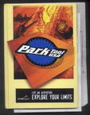
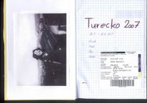
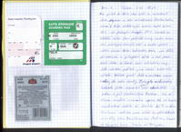
Pro přílet do Atén jsme zvolili tu nevhodnější dobu, abychom se stihli aklimatizovat. Čtvrtou hodinu ranní! Místo očekávaných nočních teplot kolem 10°C nás překvapilo dusivých 29°C. Kousek za letištní halou jsme poskládali obsahy našich krabic do velkolepých železných ořů a směle vyrazili vstříc centru Atén. Od centra Atén nás dělilo pár vesniček v průmyslové zóně a tak jsme těch 20 km kličkovali mezi nákladními vozy. Zde nás také postihla první lehká technická závada. Vaškovi praskl drát a zamotalo se uchycení brašny do zadní kazety. Takovýto mistrovský kousek jsme nemohli jinak než ohodnotit jeden a půl technickým bodem. Jak se slunce zvedalo z ranního oparu tak se teplota neodvratně zvedala až dosáhla 42°C ve stínu. Omámeni vedrem jsme shlédli ty nejdůležitější památky jako Panathinaikon Stadium, Temple of Olympian Zeus, Theatre of Dionýsos, Odeum of Herodes a samozřejmě Akropolis. Když jsme se při vstupu na kteroukoli památku prokázali studentským průkazem, bylo nám prominuto vstupné, což výrazně snížilo předpokládané výdaje z rozpočtu. Z Akropole jsme se vydali chvíli před druhou hodinou ofukováni někdy až 50°C horkým vzduchem, který nás provázel cestou dolů. V pokroucených Aténských uličkách jsme nakonec narazili na hlavní třídu, který nás dovedla až do přístavu Pireos. Zde jsme si vyzvedli zakoupené jízdenky na trajekt a na dvě hoďky jsme vyrazili na pláž. Osvěžení 25°C teplou vodou nebylo takové jak jsme si představovali, ale kdo si mohl vybírat (. Trajekt vyplul přesně v 19:30h místního času, ale jelikož jsme byli na místě již hodinu předem tak se žádné cestovatelské drama nekonalo. Na lodi jsme obsadili dostatečné množství laviček, abychom zde přečkali klidnou řeckou noc.
2. den - Efes
vzdálenost: 75,2 km | čas: 4 h | pr.: 20,21 km/h
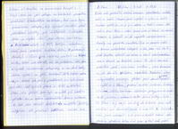
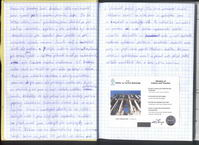
Ráno nás probudilo železné rachocení spouštěného můstku lodi o molo. Kvapem jsme vyskákali a rychle se sbalili, abychom zjistili, že to je jiný ostrov a tudíž máme ještě hodinu čas. Ráno v sedm jsme však již stanuli na ostrově Samos ve městě Vathi a zařadili se do naprosto neorganizované fronty na pasovou kontrolu. Čas se pomalu vlekl a slunce neúprosně stoupalo a tak jsme až chvíli před devátou odrazili od břehu a chvíli před polednem jsme stanuli na tureckém území. Po další zevrubné prohlídce pasu, ukončenou razítkem a vstupním poplatkem 10€, jsme konečně vyjeli do ulic přístavu Kusadasi. Překrásné útesy místy střídané soukromými plážemi jsme pomalu a neradi opustili a vydali se k Efesu, prastarému antickému městu. Širokými silnicemi, většinou lemovanými odstavnými pruhy, jsme se dostali až do jednoho z kulturních center dávné antiky. Poté co jsme i my vryli své otisky do historie jsme opět osedlali svá kola a zamířili k Selčuku. Zde jsme nakoupili a Pája si zkrátil čekání zalepením duše předního kola, čímž získal svůj první technický trestný bod (TTB). Nedbaje této nepříjemnosti jsme vyrazili vstříc našemu prvnímu kopci. To že 38°C ve stínu není překážka, jsme dokázali po půl hodině náročného opékání, ale začátek byl za námi. Následujících pár kopečků jsme přelétli a při mohutném sjezdu neunesl Fanda můj a Vaškův únik do vedení v žebříčku TTB. Prázdným zadním kolem a komplikacemi při opravě, které vyústili v opětovné píchnutí ihned po nafouknutí, bylo Frantovo snažení ohodnoceno 1,5 TTB, čímž se umístil na první místo společně s Vaškem.
Projeli jsme několika vesničkami a odmítly snad stovku pozvánek na večeři do přilehlých restaurací. Rychle se stmívalo a tak jsme si našli místečko nedaleko zavlažovacího kanálu. Místečko to bylo pěkné, ale jak zmizely poslední paprsky žhnoucího tureckého slunce, objevila se hejna komárů neodbytně dorážející na jakékoli odkryté místo i přes silný odér repelentu. Nedalo se jinak, museli jsme ustoupit do moskytiéry našich stanu. Během našeho boje s krvechtivou havětí kolem nás prošli tři pasáčci se stádem ovcí a dvakrát projel jeep. Tím jsme považovali dnešní stěhování Turků za ukončené a ulehli ke spánku. Po několika minutách se ovšem na naší bohem zapomenuté cestě objevila další světla a auto u nás zastavilo. Moderně vybavená policejní kontrola ověřila naše pasy a pak nám popřáli šťastnou cestu. Pak jsme všichni spokojeně usnuli a pokud nás přijel ještě někdo navštívit tak o tom věru nevíme.
3. den - Cesta údolím od Selčuku k Denizli
vzdálenost: 120 km | čas: 5:28 h:m | pr.: 23,06 km/h
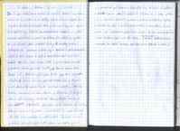
Chvíli po šesté jsme vstali a sbalili ležení, abychom ujeli co největší kus cesty. Riskovat polední slunce a následné spáleniny se nám opravdu nechtělo.
Projeli jsme městečkem Kočarli na jižní straně rozsáhlého a plně obdělávaného údolí a vydali se na východ proti proudu řeky. Kilometry rychle naskakovali protože silnice byla kvalitní a málo frekventovaná. A tak jsme v jednu odpoledne stáli v ulicích města Nazilli. Zde jsme chtěli v prvé řadě sehnat plynovou bombu pro náš vařič. Bombu jsme sice už měli z Athén, ale i přes to že vypadala naprosto kompatibilně s naším vařičem, tak nebyla. Chyběl jí malý technický detail a to závit pro našroubování vařiče. Zde se ovšem ukázalo, jak moc dobře je Turecko integrováno do Evropy. Nalézt kompatibilní bombu se nám prostě nepodařilo.
Ve dvě jsme kousek za městem objevili rozložitý strom a rozhodli se zde přečkat do čtyř než ustanou největší vedra. Spánek se nám protáhl až do šesti a tak jsme na cestu vyrazili v poměrně příjemném zapadajícím slunci. S větrem v zádech jsme ukrojili dalších 40km. V osm jsme u zavlažovacího kanálu objevili krásné a klidné místečko na spaní. Výtok z kanálu byl do krásné „vířivé vany i s protiproudem“, takže se konala koupel a praní. Díky moskytiérám jsme klidně spali až do rána. /poznámka autora/ Nutno zpětně poznamenat, že řecké bomby bylo naše první zklamání z Řecka.
4. den - Pamukale
vzdálenost: 105,8 km | čas: 5:53 h:m | pr.: 18,79 km/h
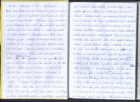
Ráno jsme se pokusili o další vstávání v pět, ale ze spacáků jsme vylezli o půl hodiny později. Rychle jsme vše sbalili a vyrazili směr Pamukale. Sotva jsme však překousli první kilometr, tak získal Fanda další TTB za píchlou duši, čímž si upevnil prvenství i v této disciplíně. Pokračovali jsme dále mezi vinicemi plnými krásných žluťoučkých hroznů, tak unešeni, že jsme přejeli správnou odbočku. A tak se nám cesta k Pamukale protáhla asi o dvě hodiny jízdy po prašné cestě podél zavlažovacího kanálu. Takže finálních asi 200m převýšení na 1km jsme šlapali při víc než 50°C na přímém slunci. Přijeli jsme k jednomu ze vchodů do turistického komplexu Hieropolis - Pamukale a ze strany Hieropolis zakoupili vstupné a bez problémů i s koly vjeli dovnitř. Začali jsme s focením ruin a už již jsme si malovali jak budeme obědvat ve stínu rozložitého stromu s pravidelným osvěžováním v známých Pamukalských jezírkách, když jsme uslyšeli zvuk píšťalky a viděli, jak se k nám blíží strážník. Zastavil nás a po opravdu dlouhém rozhovoru ve vysílačce nám začal vysvětlovat, že kola do objektu nesmí a že je musíme nechat za bránou. Se svojí lámanou angličtinou bohužel nerozuměl našim dotěrným otázkám. Proč nás sem teda pouštěli, když se sem nesmí, atd. Nicméně nám nezbývalo než objekt opustit stejnou cestou a přijet k druhé bráně v městečku Pamukale. Zde jsme si polehali do stínu stromu a vydali se po dvojicích na řádnou prohlídku známých Pamukalských jezírek. Nutno dodat, že nás správně poslali s koly pryč, protože jízda po vápenci by jistě s naším nákladem měla nevratný vliv na celé Pamukale.
Po šesté jsme opět vyrazili dále a tentokrát jsme se potřebovali dostat až za město Denízly, které bylo od nás dobrých 30km vzdáleno. Zuřivou jízdou jsme se setměním dosáhli centra města, které se právě probudilo k životu. Koupili jsme něco málo k večeři a hned za městem jsme na úpatí našeho prvního pasu objevili krásný piknik-plácek (bývalé parkoviště), kde jsme přenocovali.
5. den - Cesta na jih do Antalye (průsmyk Kazikbeli gečidi)
vzdálenost: 105 km | čas: 6:29 h:m | pr.: 16,60 km/h
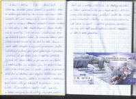
Celou noc nás hlídal potulný jezevčík a pravidelně štěkal na každé projíždějící auto. Ale aspoň nás nikdo do rána neukradl. Sbalili jsme moskytiéry a všechno ostatní vybavení a vydali se do kopce. Stoupání rozhodně nemělo konstantní charakter, a tak deseti stupňové kopce střídali menší sjezdíky. Trvalo nám asi 2,5hodiny než jsme se dostali k vrcholové ceduli průsmyku Kazikbeli gečidi (1155 m.n.m.). Po hromadné fotečce jsme dlouho neváhali a vrhli se do dalšího údolí. Slunce opět rychle stoupalo a my měli před sebou ještě několikasetmetrový pas před vytouženým vápencovým jezerem. V půl druhé jsme s vypětím všech sil zdolali kopce a po menším obchodě s kupčíkem na vrcholu jsme to rozjeli z kopce dolů. Kolem druhé jsme už seděli u jezera a připravovali oběd. Ale ne studený jako obvykle. Rozdělali jsme oheň na místním ohništi a udělali si bramboračku s těstovinami. První teplé jídlo po 4 dnech! Po vykoupání jsme si dali již pravidelnou hoďku a půl spánku a kolem šesté jsme zvedli kotvy, abychom ještě chvíli jeli a měli to zítra blíže do Antalye.
Na večer se jelo nádherně, a tak jsme dojeli až k dalšímu jezeru, kde bohužel nebyl přístup k vodě. Ale objevili jsme rozkošné místečko za rozbořeným rekreačním stavením, kde jsme si mohli dokonce i uvařit. Volba padla na gulášovou polévku, což nám nalilo opět spoustu optimismu do žil. Moskytiéra se zde již stala pravidlem.
6. den - Cesta na jih do Antalye (průsmyk Ali Beli)
vzdálenost: 108 km | čas: 5:41 h:m | pr.: 19,56 km/h
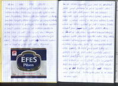
Dnes jsme na vstávání příliš netlačili a ještě si dali velkou snídani, takže jsme se na cestu vydali až kolem osmé.V městečku Tefenni, kde jsme odbočili na Antalyu, jsme také koupili pečivo a vydali se po rovných, kilometry dlouhých silnicích k průsmyku. U silnice Fanda zabodoval a koupil nějakou zeleninu od místního zahrádkáře a tak jsme již měli jídlo na celý den. Stoupání do na mapě neoznačeného pasu bylo zdlouhavé, ale mírné. Fanda zde opět zvýšil své technické hodnocení o 1 TTB za píchlé zadní kolo. Nicméně do 1520m vysokého pasu Ali Beli jsme se vyhoupli ještě před polednem a pak už ujížděli dolů, kde mělo být další jezero. Zde nás zklamala mapa, kde bylo jezero zakresleno špatně společně ještě s jednou vesnicí, a tak jsme odbočku k jezeru minuli asi 60km rychlostí při jízdě z kopce. Trochu zklamáni jsme ujeli ještě dalších 10km a schovali se do stínu rozestavěné betonové stavby, abychom opět přečkali největší vedra. Díky velkému množství zeleniny jsme udělali šopský a rajčatový salát s jogurtem. Vítečně jsme si pochutnali.
Po šesté hodině jsme zvedli kotvy a pelášili si to do tisíc metrů vysokého pasu. Zdolali jsme pouhých 100 – 200 výškových metrů a stanuli na vrcholu Tahtali Beli (970 m). Odtud jsme ujížděli dolů k Antalye najít nějaké místo na přespání. Našli jsme krásné místečko vedle vyschlého koryta řeky. Hrachová polívčička obohatila náš jídelníček. Velice rychle jsme si na vaření na ohni zvykli.
7. den - Antalya
vzdálenost: 109,5 km | čas: 5:18 h:m | pr.: 22,27 km/h
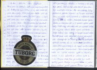
Ráno jsme se vstáváním opět moc nespěchali, protože do Antalye to bylo 30 km a my zde chtěli být přes den u vody. A tak jsme před desátou vjeli do 600 000 tureckého města. Přijížděli jsme z kopce dolů, takže jsme měli krásný výhled na celé město i s horami okolo. Průjezd městem byl poněkud zdlouhavější, jak to tak u velkých měst bývá, ale zase zde bývají velké turistické informace. Ty zde byly v podobě malého dřevěného srubu v parku vedle suvenýrů. Byli jsme tam ale ujištěni, že vlaky berou kola a to jsme chtěli slyšet. Z Fandova průvodce tureckem jsme vyčetli, že nejlepší pláž na plavání je Lara-playa. A jelikož ležela naším směrem, tak jsme na ni vyrazili. Hned na začátku jsme objevili stín pod stromy se stolečkem a lavičkami a tak volba byla jasná. Jediná chyba pláže byla, že jsme tam byli snad jediní cizinci. Ale zas o zábavu bylo postaráno, protože u břehu se koupali muslimské ženy ve všech svých hábitech a v dětských kruzích a s plovacími křidélky.
Odpoledne krásně rychle uteklo, a tak jsme již v 5 vyrazili z pláže podél vody. Podle mapy zde ovšem vedla jen rychlostní silnice, ale my jsme zkusili docela novu asfaltovou silnici vedoucí mezi hotely té nejvyšší cenové kategorie. Projížděli jsme mezi obrovitými stavbami barevnými jak v Disneylandu asi půl hodiny. Cesta vedla stále podél pobřeží správným směrem až se náhle obrátila k severu, což naznačovalo, že se napojí na již zmiňovanou rychlostní komunikaci. To se však nestalo! Cesta se náhle sklonila zpět na západ a klidně a bez odboček se ubírala zpět k Lara-Playa. A tak jsme po hodině byli opět zpátky poblíž Antalye a vyrazili znovu k jediné silnici vedoucí podél pobřeží. Že silnice byla jediná, co vedla podle pobřeží bylo poznat podle provozu, ale měla velkou výhodu odstavného pruhu, který byl mnohdy širší než normální pruh pro motorová vozidla. Kilometry zde rychle naskakovaly. Noc se,ale kvapem blížila, a tak jsme už začali hledat místo na spaní, když Vašek zvýšil své technické scóre o 1 TTB za píchlou přední duši. S celkovými 2,5 TTB zaujal suverénní 2.příčku v našem žebříčku. Zatímco Vašek opravoval přední kolo, tak Pája s Fandou vybavili naší výpravu dvěma melouny z nedalekého pole a zpestřili tak večeři. Daleko jsme již nedojeli, protože brzy padla tma. Rozbili jsme tábor u zavlažovacího kanálku s rákosem již za černé turecké tmy.
8. den - Side
vzdálenost: 97,3 km | čas: 5:51 h:m | pr.: 17,12 km/h
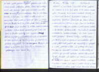
Vstávání a ranní balení nám dělá celkem potíže. Ač vstaneme v 5:15, tak před 6:45 nejsme schopni vyjet. Je pravda, že je v tom i snídaně, ale vždy už je slunce nad horami a připomíná nám, jak je dopoledne krátké. Dnes nás po hlavní silnici čekalo již jen 50 km a byli jsme (se zastávkou v pekárně u cesty pro výborné právě upečené pečivo) v starodávném přístavu Side. Byl zde již standardní amfiteátr a antické sloupořadí, ale také zde kotvili překrásné dřevěné loďky. Udělali jsme pár fotek, a pak se přesunuli na nedalekou pláž sníst ještě teplé pečivo a naposledy se vykoupat v moři, protože dále už jedeme do hor. A tak jsme se rozloučili s vlnami a slunečníky na pláži a po nevelké odbočce počali stoupat do kopců. Poledne nás zastihlo asi 300m nad mořem. Naštěstí jsme objevili zapadlé místečko nedaleko hřbitova s vodu, kde jsme si udělili oběd a čerpali síly. Schováni ve stínu před silným tureckým sluncem. Odpoledne se rychle změnilo na večer a my jsme pokračovali dále ve stoupání. Minuli jsme ještě pár krámků s ovocem a pak přišel opět padák dolů o 200m z vystoupaných 300 jsme si opět sjeli. Turecké plánování stavby silnic je v tomto neuvěřitelné. Vedou silnici raději přes kopce i když je vedle krásné údolí. V dalším stoupání zastavili dva turci z Konyi a dali nám banány a vodu. Když jsme vystoupali nahoru tak už se skoro stmívalo a neměli jsme mnoho vody, protože zde nebyly studánky, chlaďáčky, prostě nic. Ale štěstí nám přálo, a tak po malém sjezdu se objevila malá vesnička, kde jsme doplnili vodu a koupili chleba. Místo na spaní jsme našli hned půl kilometru za vesničkou v borovém háji. K večeři jsme měli opravdu hromadu jídla. Dva chleby, salám, sýr, rajčata a víno od místních prodejců. A tak jsme se s kulatými bříšky svalili do stanů.
9. den - pohoří Taurus
vzdálenost: 122 km | čas: 7:56 h:m | pr.: 15,74 km/h
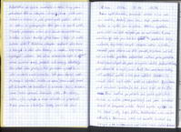
Ráno opět turecké, na obloze ani mráček. Každý jsme ráno slupli proteinovou tyčku a vydali se vstříc 1800m vysokému pasu, což má být nejvyšší pas na naší cestě. V první vesničce se nám (Pája) jen tak tak s Mišákem podařilo kluky zastavit, abychom koupili alespoň něco k jídlu. Nesnědli jsme skoro ani pár soust, abychom už už byli na cestě, protože odpočívat můžeme přes poledne. A tak jsme dupali do pasu. Rychle utekla jedenáctá hodina, pak dvanáctá a byli jsme tam! Průsmyk Alacebel (1824 m) mezi holými vršky měl naštěstí ceduli a tak jsme udělili fotečku a uháněli dolů najít nějaké místo na odpočinek. Bylo trochu pod mrakem (mráčkem) a tak jsme hnali co to šlo. První hodina po poledni tak rychle vystřídala druhou a málem jsme padli hlady než jsme konečně dorazili na kempovací místo. Nějak nejsem (Pája, ale i jiní) zvyklý na 6h čisté jízdy bez jídla. Každopádně nám zavřeli odbočku ke Karmanu. Cesta nás navedla krásně na Konyu a tak budeme muset naší další cestu ještě doplánovat. Po jídle jsme dali jen tak hodinku pauzu, aby nám slehlo a pak jsme opět naskákali na kola a vydali se do nedalekého města Seydišehir. Nakoupeno jsme již měli, a tak jsme městem prolétli, jak uragán (Fanda nedbaje červených) a proti větru jeli na sever. Rychle se smrákalo a než jsme stihli opustit nejvíce obdělávanou část okolí města, tak již byla skoro tma. Podařilo se nám, ale najít pěkné místečko na strništi za větrolamem, docela daleko od silnice a dokonce jsme stihli postavit i stany. Večeře byla skromná, protože jsme obědvali před pátou a nikdo moc neměl hlad. O to víc zbude na snídani. Technické bodování k 10 dni:
Skóre TTB k dnešnímu dni | Fanda 3,5 + 1 | Vašek 3,5 | Pája 1 | Mišák 0 + 1
10. den - Konya
vzdálenost: 135 km | čas: 7:16 h:m | pr.: 19,16 km/h
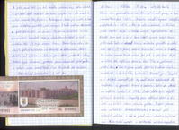
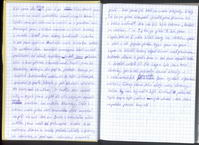
Ráno nás probudila zima. Šla pára od pusy a bylo neuvěřitelných 12°C. docela rozdíl oproti obvyklým odpoledním 45°C. ale to nás nezastavilo a všichni jsme oblékli tajné a dosud ukryté teplé oblečení. Naložili jsme kola a už už jsme chtěli vyrazit když Vašek našel trn v zadním kole z místního porostu a získal tak další TTB, čímž srovnal technické score s Fandou. To ovšem nemohl Fanda nechat jen tak a než jsme dojeli na silnici, vrazil si trn do předního pláště. Tímto jsme svědci dalšího Fandova úniku, tentokrát v technickém bodování. Přišel první kopeček a i Mišák usoudil, že by měl také zasáhnout do bodování a pomocí trnu v zadním kole se dotáhl na Páju. Cesta dále byla opět vyloženě turecká. Kopečky jsme zdolávali stěží a do údolí se řítili skoro volným pádem. Projeli jsme mezi několika dvoutisícovkami a minuli pár zelných políček a už se před námi otevřel výhled na turecké město s třičtvrtě miliony obyvatel. Vjeli jsme do Konyi z jihu a po pár kilometrech jsme narazili na nezvykle malé hlavní nádražíčko. Zjistili jsme pár informací o vlacích a o přepravě kol. Nakoupili jsme v blízkém marketu a ulovili kebaby k obědu. Snědli jsme je hned vedle v parku a vydali se na Aladinův vrch v centru města. Za asistence dvou tureckých teenagerů, kteří na nás pokřikovali své základy angličtiny jsme snědli balení oliv a kus pokusu o turecký med. Zapili jsme to Efezánky zabalenými do papíru, protože Konya je značně konzervativní město, co se týče islámských pravidel. Pití alkoholu je zakázáno a na veřejnosti především. Za hoďku jsme nabrali síly a vyjeli opět do ulic, abychom opustili Konyu směrem město Aksaray. Cesta k němu vede přes obří step (travnatou pláň) měřící napříč víc než 100km. Cestu z Konyi jsme našli až překvapivě snadno a tak netrvalo dlouho a zmizely poslední sklady a továrny a otevřela se před námi nekonečná travnatá pláň. Jak cesta ubíhala, znovu se ozývali hlasy „že to je přeci hloupost jezdit přes planinu, co z toho máme?“ ale jak již bylo řečeno: „rozkaz je rozkaz..“ a „plán je plán!“. Pomalu jsme se blížili k horám asi 1500m vysokým ve které pláň plynule přešla. Vyjeli jsme na první kopce a shlédli krásný západ slunce nad planinou. Netrvalo dlouho a padla tma. Opustili jsme cestu a po 200 metrech mezi stromky posbírali poslední suché klacíky a v robinsonských podmínkách vyrobili výtečnou večeři. Stany jsme také ukryli mezi stromy, takže noc by měla být klidná a pokojná. Tyto kopce byla jediná výstřednost v této jinak naprosto placaté krajině.
11. den - step mezi Konyou a Aksaray, Sultanhani
vzdálenost: 135 km | čas: 6:56 h:m | pr.: 20,05 km/h
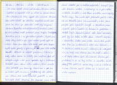
Probudilo nás slunce nad obzorem, což byl pro všechny dobrý důvod vyskákat ze spacáků a jít se podívat na krásný východ slunce. Pájovi s Fandou ráno napadli stan mravenci. Ač stan večer stavěli na zdánlivě bezpečném místě, tak jej ráno po probuzení našli celý obsypaný stovkami (speciálně cvičených tureckých) mravenců, kteří se usilovně snažili prokousat skrze tropiko. Bohužel se jim to i na pár místech povedlo. Rychle tedy stany sbalili a po rychlé snídani jsme vyrazili opět na silnici. Dnes ráno ovšem vítr fouká proti nám. Kopce opět rychle přešly v planinu a vítr nevítr nasadili jsme rychlost 20km/h a uháněli planinou. Silnice je tady úplně rovná a zatáčky jsou značené. Aut od včerejška ubylo a tak jsme v poledne byli v Sultanhani. Prohlédli jsme dávné sídlo sultána, které sloužilo jako útočiště pro karavany. Od Aksaray nás dělilo jen 50 km, ale začal opět foukat protivítr a to činilo cestu dosti náročnou. Po 4.hodině odpolední jsme vítězoslavně dosáhli Aksaray. Koupili jsme zde trochu ovoce a zeleniny a s pár radami místních trefili i maličkou silničku mezi kopečky. Podle mapy tam měla být přehrada poblíž silnice, ale nic takového se nekonalo, a tak jsme přejeli pár vyschlých koryt a najednou jsme objevili skalní město s tekoucím potokem. Nebýt hejn komárů, kteří zde také nocovali, dalo by se toto místo nazvat rájem v Turecku. Sotva jsme sladce usnuli, přijeli dva Turci na motorce a začali něco hulákat. Po chvilce se ukázalo, že umí i německy a přišli nám říci, že tady mezi skalami jsou vlci, hadi a štíři a ať raději jdeme spát do vesnice. Ovšem při představě, že se za tmy balíme a nasedáme na kola, jim Mišák sdělil, že máme stany proti hadům a vlků se nebojíme. Tak nám popřáli dobrou noc a nechali nás vlkům napospas.
12. den - Cappadoccia, podzemní město Derinkuyu
vzdálenost: 100 km | čas: 6:04 h:m | pr.: 16,97 km/h
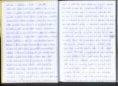
Ráno byla opět slušná zima (14°C) a ze spacáků se nám vůbec nechtělo. Až s prvními paprsky jsme vyskákali a začali balit. Velice neradi jsme opouštěli takové pěkné místečko s tekoucí vodou, ale dnes nás čeká prohlídka Cappadocie a to je něco! Cesta se klikatila a vedla nahoru a zas hned dolů krásnou zvrásněnou krajinou. Asi po prvních 10 km se asfaltová silnice změnila v kamenitou a štěrkovou v různých etapách výstavby. Tím se náš postup značně zpomalil. Chvíli před dvanáctou jsme koupili chleba ve vesničce, kde zrovna projížděl novomanželský průvod, a kousek za ní jsme v klidu poobědvali. Fanda zde také vyměnil svou stále unikající zadní duši a tak získal další TTB do celkový 5,5 TTB. Přejeli jsme celé 20 km dlouhé údolí a dojeli do městečka Derinkuyu, kde je nevětší podzemní město v Cappadocii. Derinkuyu bylo podezřele malé s jen 11 000 obyvateli a jen jedením nebo dvěmi minarety. Projeli jsme mezi asi 20 stejnými krámky s potravinami, když se před námi objevil křesťanský kostelík s kopulkou. Hned vedle byl vstup do 8 podlažního podzemního města, což byl rozsáhlý komplex jeskyní a tesaných místností, kde se mezi 4. a 11. stoletím schovávali křesťané. Proto zde nechyběl ani kostelík do kříže či stáje a studna. Na povrchu jsme pak doplnili zásoby a doplánovali naši další cestu. V šest jsme opět usedli na kola a vydali se po pláni a přes menší kopečky na východ. Jak jsme tak jeli obdělávanými poli, tak se před námi náhle otevřel kaňon a cesta klesla do překrásného 200 m hlubokého údolí plného domečků, jeskyní a maličkých políček. Opět jsme u mešity doplnili vodu a zde odbočili na sever. Toto údolí je nevýchodnější bod naší cesty. Po vystoupání 200 m zpět nahoru, tak jsme se opět ocitli mezi rozlehlými polnostmi a po skrytém údolí nebylo ani památky. Začalo se smrákat a to byl důvod rychle najít nějaké stromy, u kterých se dá přespat. Pláň však byla bez lesíků jen s osamělými solitéry a proto jsme rozbili tábor nedaleko cesty na poli. Po studené večeři jsme všichni zalezli do spacáků a spali až do rána.
13. den - Cappadoccia, Goreme
vzdálenost: 77 km | čas: 4:18 h:m | pr.: 18,87 km/h
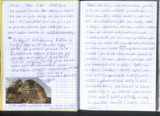
Jak vykouklo sluníčko a trošku se oteplilo, rychle jsme se sbalili, což nám trvá stále déle. Jeli jsme ještě chvíli mezi poli a pak se před námi otevřelo další údolí, kde jsme objevili zapadlou cestičku do Kešlik Monanstery. Místní kastelán nám udělal prohlídku s výkladem (uměl trošku anglicky) za velice příjemnou cenu. Pozvání na ranní kávu jsme nemohli odmítnout. Poprosili jsme jej aby nám napsal pár řádek do deníčku. Napsal nám, že je moc rád, že jsme přijeli a mohl nám nabídnout pohostinství. Na oplátku Franta napsal / nakreslil úžasné výtvarné dílo do jeho pamětní knihy. Neradi jsme starý klášter opustili a vydali se dále do Mustafapasa, kde jsou zbytky řecké kultury a stavitelství. Dále jsme navštívili městečko Urgup, kde jsou další zbytky křesťanských obydlí ze 4.století ve skalách. Zde jsme koupili pořádnou porci zeleniny na šopský salát a o pár kilometrů dál směrem ke Gorme jsme udělali tento výborný zeleninový salát k obědu. Jen co nám slehlo, vyrazili jsme na prohlídku Goreme. Otevřelo se pře námi údolí plné homolovitých skal a jeskyní. Spolu s nimi se objevili i autobusy s turisty. Zaplnili jsme další místo na paměťových kartách našich foťáků a pokračovali údolím k severu. Ve městě Avanos jsme odbočili na západ podle řeky a po několika kilometrech jsme objevili krásné místečko u vody se spoustou komárů a mušek, ale u vody.
14. den - Cesta do Ankary
vzdálenost: 118,5 km | čas: 6:25 h:m | pr.: 19,57 km/h
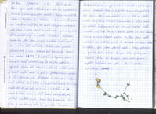
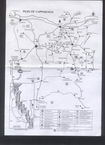
Ráno bylo opět chladné, ale jen co vykouklo slunce z poza kopců, tak se vrátili i hejna mušek. Vaška s Mišákem bolí břicho a ani Pája s Fandou se necítí nejlépe, ale tohle nás přeci nezastaví. Vše jsme v klidu sbalili a kolem osmé jsme vyrazili dále podél řeky k městu Gulšehir. Kdekoli zastavíme, jsou mraky mušek. Snad zmizí až budeme dál od vody. Vaškovi také praskl druhý drát a tím zarovnal své technické skóre na rovné 4 TTB. Ve městě Gulšehir jsme nakoupili lehčí stravu, abychom ji všichni ustáli. Kousek za městem Pája prorazil zadní duši a pak ji profesionálně vyměnil za již lepenou,ale děravou a tím elegantně získal 1,5 TTB a zvýšil své skóre na 2,5 TTB. Cesta se dál ubírala mírně z kopečka a tu jsme ve městě Mucur uviděli krásné altánky, kde jsme přečkali největší výheň. Dnes bylo krásných 38°C ve stínu a na všechny doléhá patřičná únava. V altáncích jsme se pohodlně rozvalili a velice rychle usnuli. Netrvalo dlouho a přišli se na nás podívat tři Turci, kteří nám nabídli pití a ptali se jestli máme co jíst (. Po chvíli konverzace a když jsme jim ukázali kudy jsme jeli se nás zeptali jestli nejsme vojáci. Asi by v tomhle vedru na kolo normální Turek (a asi ani cizinec) nevlezl. Ve čtyři jsme opět naskákali na kola a vyrazili k skoro 200 000 městu Kiršehir. Zde jsme doplnili vodu i zásoby potravin a vyrazili směr Ankara. Asi po 20 km jízdy po hlavním tahu na Ankaru jsme našli krásné zapadlé místečko mezi poli a docela daleko od silnice.
15. den - Cesta do Ankary
vzdálenost: 123 km | čas: 7:37 h:m | pr.: 16,45 km/h
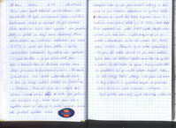
Ráno jsme opět vstali až po rozednění, ale tentokráte to bylo ve znamení technického hodnocení. Vašek se rozhodl, že při výměně duše zadního kola také vymění dva prasklé dráty a plášť za fungl nový kevlarový, čímž zdvojnásobil své technické hodnocení na celých 8 TTB a urval tak první příčku v našem technickém hodnocení. Vyrazit se nám podařilo již před devátou a za pár kilometrů jsme sjeli z hlavního tahu na Ankaru, abychom tam dojeli po méně frekventované silnici. Po deseti kilometrech však začala rekonstrukce silnice a hrubý asfalt střídal šotolinu a štěrk. Nedobrovolně jsme prohnali několik kilo prachu našimi plícemi, jak se kolem nás prohnalo několik nákladních aut. Kolem druhé jsme s vypětím všech sil dojeli k vodní nádrži, abychom zde přečkali největší vedra. Koupání je zde jen pro silnější nátury a proto jsme si jen trochu odpočinuli a vyrazili dále. Sotva jsme se zvedli, Vašek za pomocí trnu v zadním kole získal další již 9. TTB. Proti zdejší floře nepomohl ani plášť NANO Raptor, kterým ráno vybavil své zadní kolo. V pět jsme ale byli již na cestě a čekalo nás 36 km do vesnice Bala, která byla na v 1450 m vysokém kopci. Stoupání bylo velice vyčerpávající a tak jsme do města dorazili až po osmé hodině. Rychle jsme zde dokoupili chleba na snídani a vyrazili z kopce hledat místo na spaní. Krajina cestou dolů se podobala té po cestě nahoru hlavně v tom, že zde nebyly žádné stromy. Skoro za tmy jsme odbočili k vyschlému korytu a přibližně 300 m od silnice našli místečko i s dřevem. Teplá polévka nám tedy opět obohatila jídelníček.
16. den - Ankara
vzdálenost: 87 km | čas: 5:03 h:m | pr.: 18,11 km/h
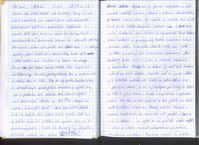
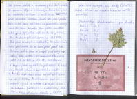
Dnes nás čeká dojet do Ankary. Brzy se nám vstát nepodařilo, ale aspoň jsme víc odpočatí. Vašek opět začal den zápisem do technického bodováním a vyndal další dva trny ze zadního kola, čímž zaokrouhlil své technické skóre na rovných 10 TTB. Při balení kolem nás prošli dvě stáda ovcí i s udivenými pasáky, kteří čekali, že v korytě řeky bude spíš v létě voda než 4 cizinci na kolech se stany. Co víc, při balení Mišák také objevil, snad již unifikovaný turecký proticyklistický trn v zadním kole a získal tak 2.TTB. To ale přišlo Fandovi líto a rozhodl se, že všechny dnes trumfne a vytáhl trny jak z předního tak zadního kola, čímž se dostal na 7,5 TTB. Vážně jsme asi v „korytě trnů“. Než jsme stihli dostat kola na asfalt, tak ještě Vašek vytáhl další trn ze svého zadního pláště. Vyrazili jsme s tím, že to vyměníme později. Cesta do Ankary je vskutku prokletá, neboť každých 10 km Turci silnici rozšiřují stylem nejprve rozkopat a pak možná udělat novou. Hned v prvním tankodromu Fanda ulomil jednu tyč nosiče a získal tak 2 TTB čímž snížil Vaškův dosavadní náskok na 1,5 TTB a technické bodování tak získalo na zajímavosti. Před Ankarou jsme zastavili u pumpy, aby Vašek konečně zalepil píchlou duši. V Turecku člověk nikdy neví, jestli je toto konečný stav technického hodnocení. Do Ankary jsme vjeli z jihu a rovnou zamířili k rozhledně Atakule, ze které by měl být krásný výhled na celé město. Kousek od ní jsme udělali pár foteček města, ale Vašek na jednu fotku vzal i policejní stanici, za což byl obklopen policisty a začalo se řešit jeho focení. Fanda s angličtinou nepomohl, protože tak tam nikdo nemluvil a tak přišla na řadu opět Mišákova němčina. Stálo nás to 40 minut a spoustu trpělivosti, ale konečně nás pustili. Popojeli jsme k Atakuli a vydali se na prohlídku města z výšky. Z věže se vtipně nesmělo fotografovat ve směru k vojenským objektům. Pak jsme zamířili k mešitě, která byla se čtyřmi minarety krásně vidět z rozhledny. Propletli jsme se zacpanými uličkami a ocitli se na shromáždišti před obrovskou mešitou. Fanda zde píchl přední kolo a dal se do lepení. Tím jsme získali čas na prohlídku mešity zevnitř. Něco takového jsme ještě neviděli a proto jsme byli celkem rádi, že Fanda píchnul. Tím zvýšil své skóre na 10,5 TTB. Poté jsme zamířili k nádraží. Na informacích nám paní řekla, že se kola platí před naložením a tak jsme si koupili jízdenky na jediný vlak vezoucí i velká zavazadla, který jede až zítra v 12:15h. S lístky v kapse jsme se vydali koupit něco k snědku. Pojedli jsme u kulturního centra a Fanda opět píchl čímž se dostal na 11,5 TTB. Po občerstvení jsme se rozhodli vyjet za město a přespat tam. Objevili jsme nedokončený obchvat u ruin nějakých domů. Voda zde sice nebyla, ale co by člověk chtěl 10 km do centra hlavního města Turecka.
Technické hodnocení po dnešku: Vašek 11,5 | Fanda 11,5 | Pája 2,5 | Mišák 2
17. den - přesun vlakem do Istanbulu
vzdálenost: 12,35 km | čas: 0:38 h:m | pr.: 21,71 km/h
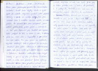
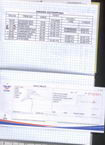
Ráno jsme překvapivě přežili bez technického bodování. Snědli jsme zbytky zásob a vrátili se zpět do města, abychom vyměnili ještě nějaké dolary a eura za místní Liry. Také jsme nakoupili něco k snědku abychom cestu ve vlaku přežili. Na náměstí, kde jsme nakupovali, jsme potkali Poláka, který právě přijel z Istanbulu a tak nám doporučil pár hostelů, kde bychom mohli přespat do 10 € za osobu na noc. Za odměnu jsme mu řekli něco o Cappadocii a ukázali mu naší cestu. Pak jsme vyrazili na nádraží, abychom odstrojili kola a připravili se na cestu. Navštívili jsme ještě informace a internet access point, kde jsme zjistili pár dalších adres hostelů v Istanbulu. Nedaleko nástupiště jsme koupili kebaby a pak už byl čas jít do vlaku. S veškerou bagáží v rukou jsme procházeli kolem výdejny zavazadel kam jsme předtím odvezli naše kola. A tu vyběhl Turek a začal na nás mávat, abychom si vzali i ta kola. A tak jsme se těžce přeloženi vrhli s koly do podchodu k 2.nástupišti. Naložit si sami kola není zas tak špatné, aspoň člověk ví, že nezůstanou v Ankaře. Akorát nám to mohli říct dřív. Povedlo se nám urvat i čtyři místa poblíž sebe a pak se vlak rozjel směr Istanbul. Sedačky měli spoustu místa na nohy a tak nám ani nepřišlo, že jedem nejhorší 2.třídou. Čas rychle ubíhala při kochání se rychle se měnící krajinou. Trať vedla velkým obloukem sahajícím na jih od Istanbulu. Proto je v Turecku železnice opravdu pomalá. Byli jsme rádi za vysněný den odpočinku a tak nám devět hodin jízdy uteklo jako nic. Před desátou večerní zastavil vlak v Haydarpaša, hlavní nádraží Istanbulu v asijské části. Vyběhli jsme ven, abychom si rychle vyndali kola. Se vším vybavením jsme se přemístili před nádraží, kde jsme vše nabalili. Zadarmo jsme lodí přepluli Bosporských průliv a stanuli tak v evropské části Istanbulu, kde je většina památek a hlavně, kde jsou hostely, ve kterých jsme se chtěli ubytovat. Rovnou jsme podle městského plánku zamířili k Chillout Cango. Nejlevnějšímu hostelu co se nám povedlo na netu najít. Po hodině bloudění jsme přibližně v půl druhé ráno objevili v zapadlé uličce malý vchod. Zazvonili jsme a s majitelkou jsme dohodli 4 postele. Vynesli jsme kola do 3.patra a obsadili část 10-ti lůžkového pokoje. Všichni jsme si dali krásně horkou sprchu a rozhodli se jít projít po nočním Istanbulu. Překvapivě byla ještě spousta krámků otevřená a tak jsme vybaveni Efezským mokem dorazili na náměstí ve čtvrti Taksim, kde bylo shromaždiště taxi. Bylo co oslavovat! Půl cesty do Soluně bylo za námi a my jsme stále měli ještě kola. Udělali jsme krátkou procházku a vrátili se zpět na pokoj abychom si na zítřejší prohlídku Istanbulu odpočali. Trochu nám chyběla karimatka, ale rádi jsem ji oželeli.
18. den - Istanbul, zlatý roh
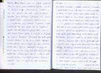
Ráno jsme nakoupili v nedaleké pekárně a obchůdku s potravinami a po 17.dnech si znovu prostřeli na talíři. Po rychlé snídani jsme posbírali foťáky a vyrazili z kopce na jiho-západní výběžek Istanbulu zvaný Golden Horn. Prošli jsme kolem kulaté věže Galata a prodírali se maličkými uličkami plnými lidí. Došli jsme k moři a vydali se přes most na jih. Z mostu byl krásný výhled na celý Istanbul a tak jsme začali opět plnit datové karty našich foťáků. Hned za mostem je „nová mešita“ z 16. stolení a trh s kořením. My jsme ovšem zamířili přímo k nádraží, protože jsme nejprve chtěli domluvit a rezervovat jízdenky. Po hodině dohadování, kdy jsme se snažili dostat i s kolama na noční vlak, jsme si museli koupit jízdenky na denní vlak na pondělí 13. s vědomím, že takto zabijeme jeden celý den jízdou vlakem. Poté jsme se začali drápat na kopce výběžku Golden Horn. Přímo před námi byl Topkali palác obklopený zahradami. My jsme ovšem mířili k Hagia Sofii, jedné z nejznámějších památek v Istanbulu. Bohužel jsme ji zastihli v obležení autobusů s turisty. Zaplatili jsme standardní taxu 10 YTL a vydali se do útrob obrovské stavby. Vnitřek byl částečně v rekonstrukci, ale stavba byla i tak ohromující. Pořídili jsme pár foteček a za hodinu jsme byli venku. Přímo naproti Hagia Sofii je známá „Modrá mešita“ do ní se nám podařilo dostat chviličku před uzavřením pro turisty kvůli motlitbám. S šesti minarety a pověstnou modrou výzdobou je tato mešita opravdu skvostem islámu. Leč jak zde bylo mnoho turistů, tak na nás zanechala větší dojem mešita v Ankaře. Blížil se večer a proto jsme ještě zamířili do slavného Istanbulského Grand Bazaru. Cestou tam nás několik místních varovalo ať tam jdeme raději dopoledne, jinak budeme zklamáni. Dali jsme si raději kebab a vyrazili na hostel. Po cestě zpět jsme ještě nahlédli do „nové mešity“ a na trhy s kořením a pak zase přes most zpět. V hostelu jsme si dali sprchu, něco málo pojedli a vyrazili opět na Golden Horn udělat pár nočních fotek. Udělali jsme prakticky stejný okruh. Po půlnoci jsme se utrmáceni vrátili zpět. Opět rychlá sprcha a už jsme spali jak zabití. Mišákovi dnes nebylo dobře a tak večerní etapu vynechal, aby se mohl vypotit a dát dokupy. Zítra vyrazíme prohlédnout zbytek města a konečně Grand Bazar.
19. den - Istanbul, Eyup, Fatih
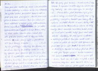
Dnes jsme dali budíček na osmou s tím, že uděláme k snídani těstoviny a vrhneme se do víru velkoměsta. Po vydatné snídani jsme seběhli kopec k vodě a přišli přes most plný rybářů. Zamířili jsme si to přímo k bazaru s kořením. Bylo sice ráno, ale Turek rozdělávající si krámek přímo před zavřenými dveřmi bazaru nás značně znervóznil, že je něco špatně. A tak jsme si pospíšili ke Grand Bazaru, který byl dnes našim hlavním cílem. V deset jsme stáli před jeho branami, které ale byly nemilosrdně zavřené. Zklamáni jsme se vydali k poslednímu cíli naší trasy. Ke 4.nejvýznamnější (po Mece, Medině a Jeruzalému) mešitě pro Islámský svět, která je ve čtvrti Eyup. Fanda byl ale předchozími neúspěchy tak zhrzen, že se od nás odpojil a šel jezdit po městě na kole. My vytrvalci jsme pokračovali dále k mešitě. Urazili jsme několik kilometrů městem plným mešit a minaretů. Obešli jsme městské hradby a dostali se k řece, kde byli parky plné turistů. Několik set metrů nám zbývalo k vysněné mešitě, když se okolo objevily krámky se vším možným a mraky lidí. Náměstíčko před mešitou bylo přeplněné lidmi a vchod do mešity byl jimi prakticky zacpán. Nasadili jsme všechny síly, abychom se dostali dovnitř a aspoň z dálky viděli hrobku pobočníka Mohameda, na kterou se stály fronty. Mezi obrovským množstvím Turků jsme byli snad jediní turisté. Po nasátí dostatečného množství islámské atmosféry jme vyrazili k jednomu z nedalekých přístavů. Lodí jsme pluli do asijské části Istanbulu a odtud zpět přívozem do evropské části, konkrétně čtvrti Bešiktaš. Po cestě byl krásný výhled na dálniční most přes Bosporský průliv spojující asijskou a evropskou část Istanbulu. Odtud jsme zamířili zpět k domovu. Pojedli jsme něco k večeři a vydali se najít směnárnu, abychom mohli zaplatit 180 YTL za nocleh. Večer jsme se ještě vydali nasát trochu Istanbulské atmosféry do centra města. Míšáka trápily žaludeční potíže a proto zůstal v hostelu. Fanda s námi došel na most a pak vyrazil po vlastní ose. Pája s Vaškem vyrazili do „Nové mešity“ hned za mostem, podívat se, jak taková mešita vypadá v noci. Sotva jsem pronikli dovnitř a usadili se na koberce tak začali přicházet muslimové a chystat se k bohoslužbě. A tak jsme tiše seděli a shlédli celou islámskou bohoslužbu. Hned jak bohoslužba skončila, vydali jsme se zpět přes město plni dojmů. Shlédli jsme závěr představení Japonky tančící s ohnivou tyči a v jedenáct již byli v hostelu. Po rychlé večeři jsme šli brzy spát, abychom byli ráno čilí.
20. den - putování vlakem do Soluně
vzdálenost: 9,5 km | čas: 0:45 h:m | pr.: 14,03 km/h
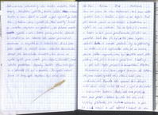
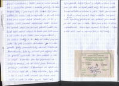
Jen co jsme se ráno rozkoukali, začali jsme vynášet kola z hostelu a balit na ně bagáž. Před půl osmou jsme se rozloučili s hostelem a vydali se na nádraží. Cesta byla až na nádraží stále z kopce a proto již před osmou jsme stáli na peróně. Vlak tam již byl, tak jsme rychle naložili kola a utratili poslední liry za potraviny na cestu. Z 6-ti vagónového vlaku jel na hranice pouze jeden vagón, který byl ještě navíc poloprázdný. Vlak jel k hranicím přibližně 4 hodiny. Poté náš vagón připojili k samostatné dieselové lokomotivě a ta nás převezla přes hranice do Řeckého Pythonu. Zde jsme museli vyložit vše z vlaku a čekat na ten řecký. Fanda zde vyměnil stále utíkající zadní duši čímž získal 12,5 bod a ujal se tak vedení v technickém bodování. Řecký vlak sice přijel, ale sotva jsme přišli s koly k vlaku, tak nám řekl nějaký průvodce, že kola neberou a pak se vlak rozjel a náš odjezd z hranice se rozplynul v nenávratnu. Začali jsme se zuřivě dohadovat s personálem stanice a místními policisty, že máme koupené lístky i pro bagáž do Soluně. Byli jsme ujištěni, že večerní vlak je regionální a tudíž nás vezme. A tak jsme čekali 6 hodin do 22:30, abychom mohli konečně pokračovat směr Soluň. Vlak opravdu přijel, ale jak nás průvodčí viděli, tak hned začali mávat rukama, že tento vlak kola nevozí a ať jedem jiným. Začali jsme argumentovat, že máme lístky, a že tady už žádný jiný nejede. Po pěti minutách dohadování se nám povedlo řeky přesvědčit, aby nás vzali alespoň do Alexandropole, kde by už měl jet nějaký vlak co převáží zavazadla. Vše jsme naložili a vlak se rozjel. V Turecku jsme byli připraveni na všechno možné, ale od Řeků jsme takovýto přístup nečekali. V Alexandropoli nás vyložili s tím, že vlak s bagáží jede v 3 hodiny odpoledne. Byla jedna v noci a my si začali nabalovat kola, abychom mohli odjet za město se někam vyspat. Podél vody byla spousta hotýlků, barů a velkých rezidencí a tak jsme jeli dále na západ podél vody. Až jsme uviděli temnou odbočku ze silnice k pláži. Zajeli jsme k moři a Fanda v rákosí objevil slušné místečko na spaní. Opuštěný letní přístřešek nám posloužil jako útočiště pro naší první noc v Řecku. Takhle jsme si to ale vůbec nepředstavovali. Skoro bych zapomněl, že Fanda v Pythonu získal další bod a skóruje tak s 13,5 body.
21. den - putování vlakem do Soluně II
vzdálenost: 18 km | čas: 1:15 h:m | pr.: 16,26 km/h
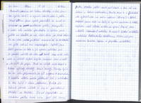
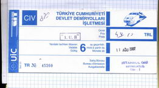
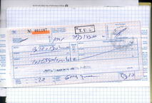
Probudili jsme se až kolem deváté a proto jsme se rychle sbalili a vyrazili ulovit něco k jídlu. Před Lídlem jsme rychle posnídali a hned se přesunuli na nedalekou pláž. Koupačka v moři nás maličko povzbudila a všichni jsme ještě víc doufali, že nás vláček dnes po třetí odveze. To že vlak jedoucí po třetí znamená až ve tři čtvrtě na pět nás už ani nepřekvapilo. Zaplatili jsme další peníze za kola a již vybaveni cedulkami jsme je pomohli naložit do vlaku. Zabrali jsme místa vedle sebe a naložili zbytek bagáže. Konečně jsme si sedli a vlak se dal do pohybu. Trať se ubírala mezi kopci a krásné výhledy střídali temné tunely. Tunely bylo to co nám připomínalo, že už nejsme v Turecku. V každém větším městě přistoupili lidi s místenkami a tak bylo o zábavu postaráno. Cesta do Soluně pomalu ubíhala a my se pravidelně střídali na toaletě. Již od Cappadocie se žaludeční potíže mezi námi točí jak černý Petr. Mišáka ještě navíc bolí hlava a tak už moc daleko v Soluni nedojedeme. Padla tma a v jedenáct nás z vlaku vyložili na obřím nádraží (8 kolejí) v Soluni. Naložili jsme vše na kola a vyrazili směrem k letišti, abychom našli nějaké místo na spaní. Projeli jsme několik kilometrů městem a objevili klidné místečko nedaleko fotbalového stadionu. Zítra už jen seženeme krabice, lepenku a přejedeme na letiště.
22. den - Soluň
vzdálenost: 72 km | čas: 4:21 h:m | pr.: 16,26 km/h
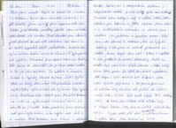
Ráno jsme sundali bagáž a nechali to u ležení i s Mišákem. Vyrazili jsme do města ve třech. V půl deváté jsme minuli první supermarket. Ale Řekové před devátou nevstávají, takže jsme v klidu pokračovali do centra. Před devátou jsme dorazili před obchod co měl mít otevřeno od osmi a to začalo vypadat dosti podezřele. Město také bylo celkem klidné na to, že slunce již bylo poměrně vysoko. Konečně jsme objevili otevřenou trafiku, kde jsme se dozvěděli, že je dnes státní svátek a proto je vše zavřeno. To udělalo z shánění krabic a lepenky docela zajímavý úkol. Vydali jsme se tedy víceméně liduprázdným městem najít nějaký cyklo-obchod, kde by za ním byly vyhozené krabice od kol. Objevili jsme čínského trhovce co měl na cyklo-krabici rozložené zboží, ale odmítal se jí vzdát. Kolem poledního jsme objevili naší první cyklo-bednu a to zvýšilo naše úsilí a naděje. Další tri bedny jsme sehnali u obchodu Seat. Spokojeni s dosavadním úspěchem v liduprázdném městě jsme se vydali zpět k Mišákovi. Zanechali jsme bedny u něj a udělali ještě jedno kolečko pro lepenku a jídlo. Lepenku jsme sehnali v květinářství a zverimexu a pak už jsme navštívili jen pekárnu a prodejce ovoce. Když jsme vše dovezli k Mišákovi, tak už byly tři hodiny a tak jsme se rozhodli pro přesun na letiště. Krom bagáže jsme vzali i krabice a úspěšně se tak přestrojili za vánoční stromečky. Cesta na letiště byla něco kolem deseti kilometrů a také nebyl skoro žádný provoz. Na letišti jsme obsadili nepoužívanou část vstupu a začali rozebírat kola do krabice. V osm večer bylo vše připraveno a tak jsme se přesunuli do odletové haly, abychom zde přečkali do našeho ranního letu. V hale bylo oproti řeckým 30°C studených 18°C. Zabrali jsme klidnou část odletové haly a obklopeni krabicemi s koly jsme se uložili k zaslouženému spánku. Já jsem opět píchl duši (minulou noc) a s dalším pokusem o výměnu takže jsem zarovnal na 4 TTB.
23. den - Soluň letiště
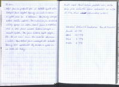
Probudili jsme se do letiště plného života. Dolepili jsme zbytek lepenky na naše krabice a vydali se směrem k odbavení. Ale jakoby včerejší svátek Řekům nestačil. Pro změnu se jim tentokrát nelíbily spreje na řetěz, které jsme s Mišákem vezli a tak jsme museli krabice rozlepit a mazadla vyndat. Pak jsme krabice opět zalepili, ale to už není ono. No snad to dovezeme v celku. Spořádaně jsme nastoupili do letadla Boing 737 společnosti Sky Europe a vydali se na cestu do Prahy.
Fanda nosič dorazil během poslední noci, takže jsme jeho technické skóre zaokrouhlili na celých 15 TTB, čímž jednoznačně zvítězil. Gratulujeme!
Konečné technické hodnocení Tour de Turecko: Fanda 15 TTB | Vašek 11,5 TTB | Pája 4 TTB | Mišák 2 TTB